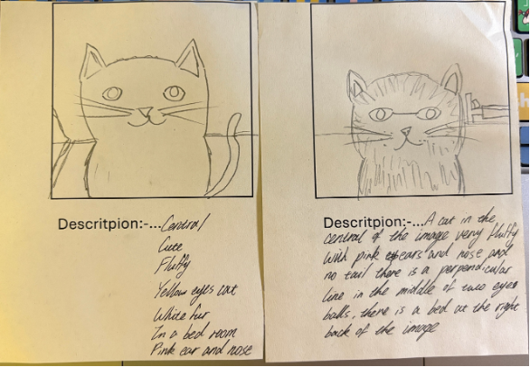
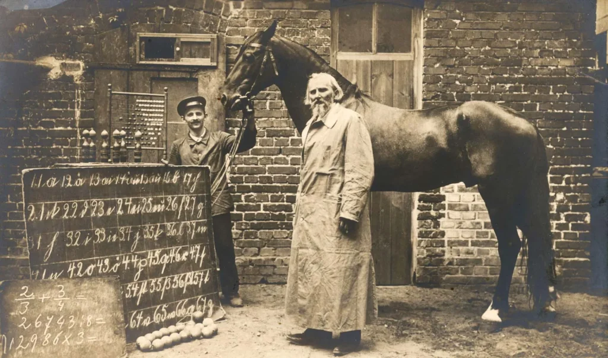

This week’s course led us into the complex world of AI prompting and image generation. The instructor presented the relationship between language model structures, latent spaces, and human cognition in an incredibly inspiring way, not only explaining how AI “understands” language and images but also sparking profound reflections on AI biases, misinterpretations, and creative potentials.
One of the course’s core concepts is “latent space” the knowledge world constructed by AI. In this space, all words, images, and concepts are embedded as high-dimensional vectors, with the “distance” between them reflecting their relevance. For example, “cat,” “dog,” and “fox” might be close in the space, while “ice cream” and “war” could be very far apart.
This made me realize that the essence of AI image generation is “searching for points” in this space and inferring images from them. In other words, a prompt doesn’t directly control the output but guides the AI to “move” within the latent space.

The instructor showed some impressive cases of AI misjudgments: mistaking a bathing mouse for “adult content,” or identifying a modified image as an iPod. These failures precisely reveal the non-human logic behind AI judgments it may not understand “objects” themselves, but rather recognizes common “correlative elements” in images.
Channel Name Unknown (circa 2017) Mouse taking a shower with soap [Video]. YouTube. Available at: link (Accessed: 26 March 2025)
For example, the reason AI might identify a showering action as sensitive content could be that it learned from massive data that “water droplets + limb movements = adult scenarios.” Such cases make me reflect: AI judgments are not “objective,” but merely predictions based on statistical analysis of numerous similar patterns.
We also studied how generative AIs like CLIP and GAN convert language into images. The key mechanism is “Contrastive Language-Image Pre-training (CLIP)”, which enables AI to understand the correspondence between language and images.
This is the video I generate with AI:
The instructor input “crow in black and white pattern at night” and displayed a series of AI-generated images ranging from realistic to abstract. This not only demonstrated AI’s ability to process complex descriptions but also made me realize: the more specific and imaginative the prompt, the more expressive and diverse the generated images become.
One of the most touching metaphors in the course was about “Clever Hans” a horse that could “guess numbers”. People initially thought it had mind-reading abilities, but later found it made judgments by observing subtle changes in human facial muscles.

Encyclopaedia Britannica (n.d.) Clever Hans and his trainer, Wilhelm von Osten [Online image]. Available at: Encyclopaedia Britannica [online](Accessed: 26 March 2025)
This was used as an analogy for AI models: AI may complete tasks, but it’s hard to confirm whether it ‘understands’ or is just ‘searching for signals’. This raises a fundamental question the explainability of AI. Even if a model performs well, there’s no guarantee it won’t make “elementary mistakes” next time.
This lesson has deeply taught me that prompt design is not just a technical challenge, but a fusion of linguistic art, ethical reflection, and imaginative creation. The “capability boundaries” of AI are not fixed they depend on the questions we ask, the descriptions we provide, and the worldviews we embed.
I’ve also realized that future AI designers need to possess:
- The ability to “navigate linguistically” within latent spaces;
- Sensitivity to AI misinterpretations;
- A conscious awareness of social responsibility.